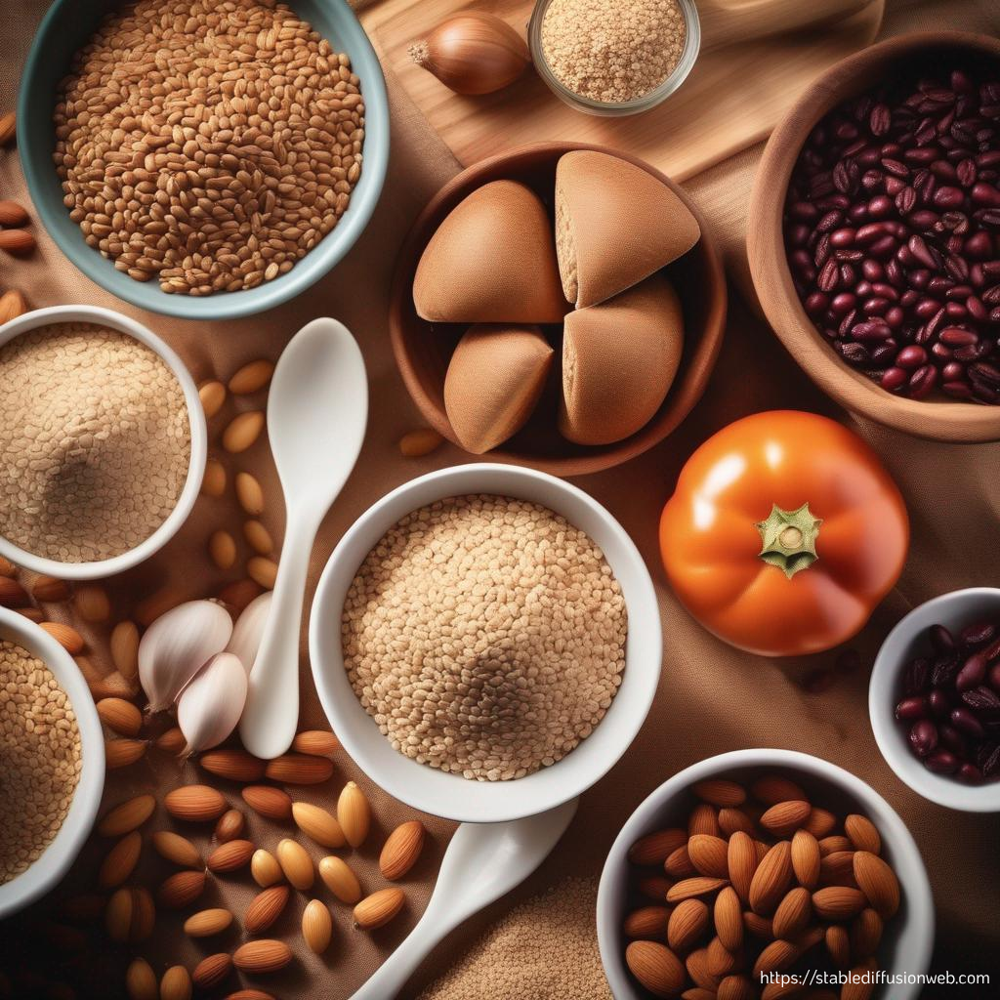
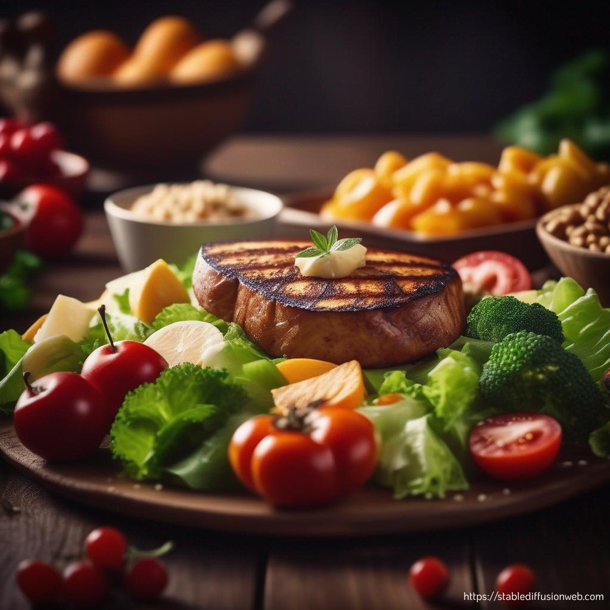
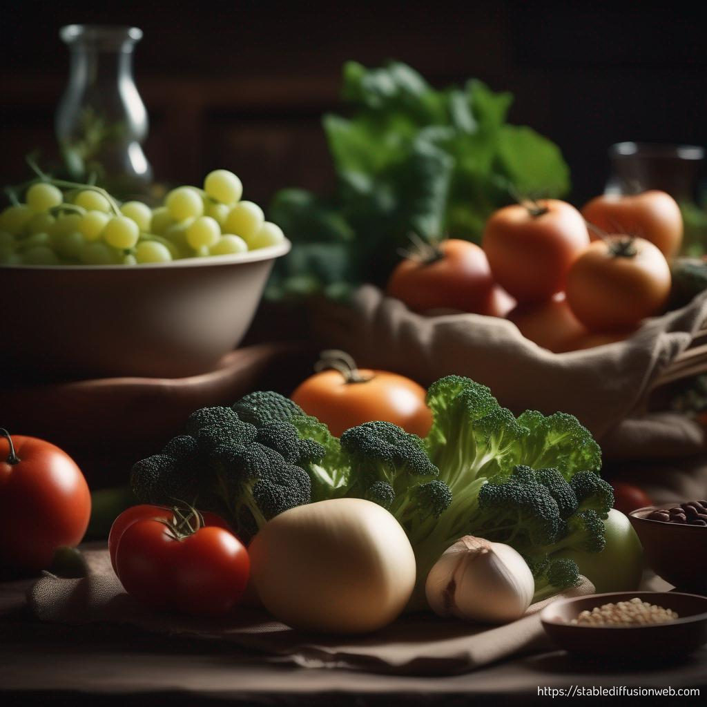

Vegetarianism and
Healthy Lifestyle
-

Improved digestion
A vegetarian diet can help improve digestion by increasing your fiber intake. Fiber is important for digestive health because it helps maintain a healthy balance of gut flora.
-

Increase in energy
A vegetarian diet can help boost energy by increasing your intake of whole grains and legumes. These foods are good sources of complex carbohydrates that provide a long-lasting feeling of satiety and energy.
-

Reducing the risk of chronic diseases
A vegetarian diet can help reduce the risk of developing chronic diseases such as cardiovascular disease, cancer, type 2 diabetes, and obesity. This is because a vegetarian diet is typically rich in fruits, vegetables, whole grains, and nuts, and these foods contain many nutrients that protect against disease.
-

Conservation of biodiversity
Livestock farming is one of the main drivers of species extinction. Livestock farming requires a large area of land for grazing, which can lead to the destruction of natural habitats. A vegetarian diet can help preserve biodiversity because it requires less land to produce.
-

Reduced soil and water pollution
Livestock farming is a major source of soil and water pollution. Emissions from livestock farms can damage soil and pollute water. A vegetarian diet can help reduce soil and water pollution because it requires less land and water to produce.
-

Reducing greenhouse gas emissions
Meat production requires many resources, including water, land and energy. It is also one of the main sources of greenhouse gas emissions. A vegetarian diet can help reduce greenhouse gas emissions because it requires fewer resources to produce.
It is important to note that vegetarianism is not a panacea for everyone. People with certain medical conditions may need to consume meat or other animal products. However, for most people, a vegetarian diet is a healthy and environmentally conscious way of life.